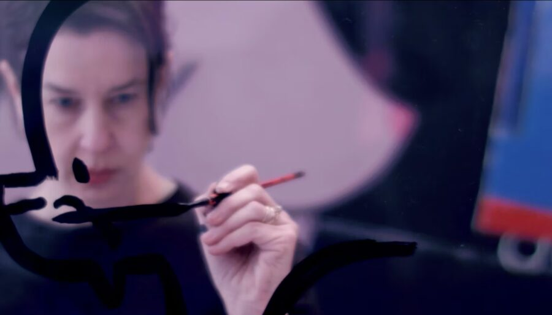

Ellen Berkenblit: Lines Roar
Lines Roar (2018) was created by the artist Ellen Berkenblit in collaboration with directors Mónica Brand and Francisco Lopez of Mogollon (Brooklyn). Intermingling footage recorded by the artist in her studio and home, as well as photographs of her family and others taken by her father, the film gives a glimpse into the intersection of Berkenblit’s life and work, an intimate examination of what drives the artist’s practice. Original Score by Zeena Parkins; Zeena Parkins: Harps/Electronics/Tuning Forks; Ikue Mori: Electronics.
This film was commissioned by The Drawing Center and co-produced by Anton Kern Gallery.